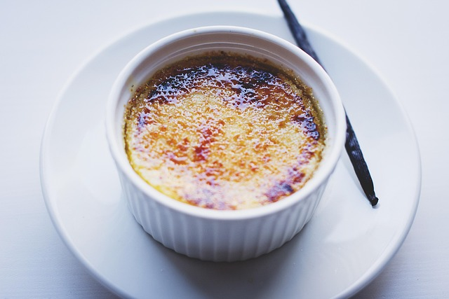

Crème brûlée

Description
Crème Brûlée is a classic French dessert featuring a rich custard base topped with a layer of caramelized sugar.
Smooth, creamy, and slightly sweet, it’s often flavored with vanilla and served chilled, offering a perfect contrast between the silky custard and the crunchy caramel top.
Ingredients
- 2 cups (480 ml) heavy cream
- 1 vanilla bean (or 1 teaspoon vanilla extract)
- 5 large egg yolks
- 1/2 cup (100 g) granulated sugar (plus extra for caramelizing)
- A pinch of salt
Steps
- Preheat the oven to 325°F (160°C).
- Heat the cream with the split vanilla bean (or vanilla extract) until warm, but not boiling. Remove from heat and let it infuse for a few minutes.
- Whisk the egg yolks with sugar and a pinch of salt until smooth and pale.
- Slowly pour the warm cream into the egg mixture while stirring continuously.
- Strain the mixture to remove any lumps or vanilla bean pieces.
- Pour into ramekins and place them in a baking dish. Fill the dish with hot water until it reaches halfway up the sides of the ramekins (water bath).
- Bake for 35–40 minutes, until the custard is set but still slightly wobbly in the center.
- Cool to room temperature, then refrigerate for at least 2 hours.
- Just before serving, sprinkle sugar on top and caramelize with a kitchen torch or under a broiler until golden and crispy.
Home